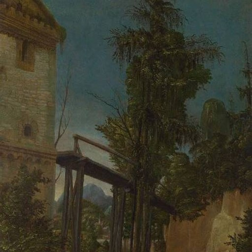
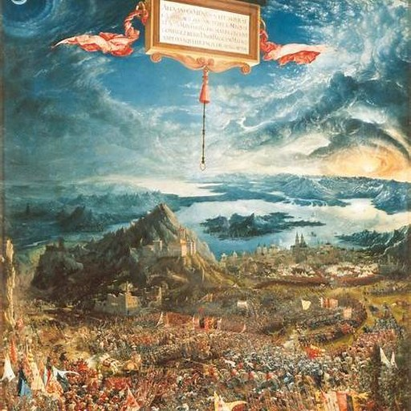

도나우파의 핵심 혁신
도나우파(Danube School, Donauschule)는 대체로 1500년경부터 1530년대까지 도나우강 유역의 남독일과 오스트리아에서 전개된 미술 경향을 가리키는 후대의 미술사 용어입니다. 대표 화가는 알트도르퍼(알트도르퍼)와 후버(후버)이며, 초기 크라나흐도 일부 연관됩니다. 핵심은 이탈리아 르네상스처럼 인간과 고전적 질서를 중심에 두기보다, 자연—특히 숲, 나무, 바위, 하늘, 빛, 안개, 강의 풍경—이 화면을 압도적으로 지배한다는 점입니다.
도나우파는 “독일 르네상스” 안에 포함되지만, 단순히 르네상스의 지방판이 아닙니다. 이 집단은 자연을 단순한 배경이 아니라 거의 주인공처럼 다루었다는 점에서 매우 독특합니다. 후대 미술사에서는 이를 유럽 풍경화의 중요한 전조로 평가합니다.
나무, 숲, 하늘, 강, 바위가 인물보다 더 강한 존재감을 갖는다.
이탈리아 르네상스의 안정된 원근법보다 역동적이고 감정적인 자연 공간이 두드러진다.
새벽, 황혼, 불길한 하늘, 안개 같은 대기 효과가 중요해진다.
역사·성서 장면에서도 인간은 종종 거대한 자연의 일부처럼 보인다.
후대에 풍경화가 독립 장르가 되는 중요한 선례를 제공했다.
독일 후기고딕 전통, 북유럽 세부묘사, 이탈리아 르네상스 영향이 만나는 지역이었다.
뒤러 이후 판화와 인쇄문화의 발전으로 새로운 자연 관찰 방식과 형식이 널리 퍼졌다.
당대 화가들이 스스로 사용한 명칭이 아니라, 후대 미술사 연구가 붙인 분류명이다.
| 비교 항목 | 이탈리아 르네상스 | 도나우파 |
|---|---|---|
| 핵심 중심 | 인간, 고전고대, 비례, 질서 | 자연의 생명력, 숲, 대기, 풍경 |
| 공간 | 안정된 원근법과 구성 | 밀도 높은 숲, 높은 시점, 깊고 복잡한 자연 공간 |
| 인물의 역할 | 서사의 중심 | 종종 자연 속 일부처럼 작게 보임 |
| 감정 | 조화와 균형 | 경외, 불안, 신비, 원초성 |
| 풍경의 위치 | 배경이 되는 경우가 많음 | 독립적인 주제나 거의 주인공 수준의 비중 |


엄밀하게 말하면 독일만의 사조라기보다 남독일과 오스트리아를 함께 포괄하는 독일어권 지역 학파입니다. 즉 데이터베이스에서는 독립 항목으로 둘 가치가 충분하지만, 국가 단위보다는 도나우강 유역의 지역적 르네상스 경향으로 이해하는 편이 더 정확합니다.
| 국가·지역·세부 사조 | 지역적 특징 | 대표 화가·제작자 |
|---|---|---|
| 독일·오스트리아 — 도나우파 |
| 알트도르퍼, 후버 |
도나우파는 르네상스의 주변 현상이 아니라, 풍경을 배경에서 주체로 끌어올린 남독일·오스트리아의 독자적 흐름이다.
본문에 이름이 등장하는 주요 화가는 아래처럼 대표작 한 점과 함께 읽어야 한다. 작품은 해당 사조의 핵심 특징을 실제 화면에서 확인하도록 고른 것이다.